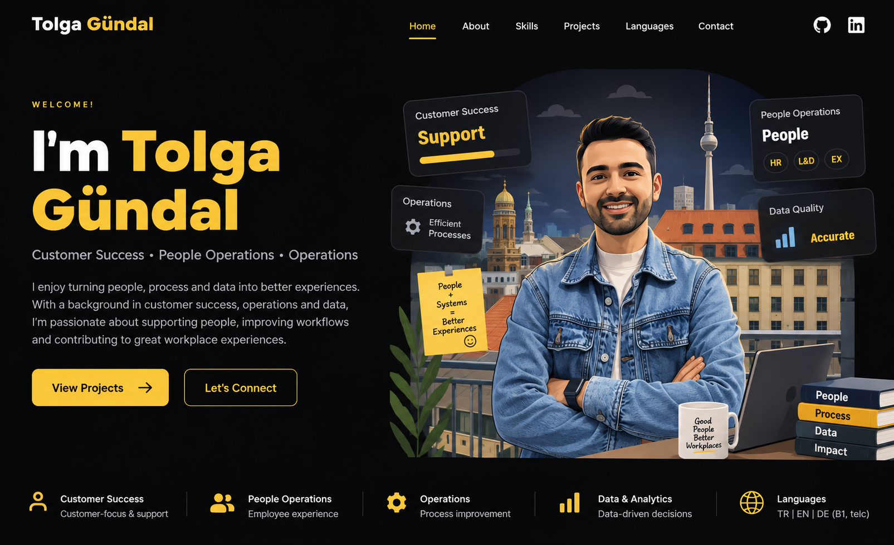

> WELCOME
Tolga
Gündal
People Operations •
Analysis •
AI & Data Quality
I turn people, processes and data into better experiences.
With experience across customer success, operations and analytics,
I enjoy improving workflows, supporting people and using data and AI
to solve practical business problems.
Berlin, Germany • M.Sc. Data Analytics

People OperationsPeople & process
AnalysisInsights & decisions
AI & Data QualityAccurate & efficient
> ABOUT
What I bring
01 / PEOPLE
People Operations
People-first operational support across onboarding, employee processes, learning, employee data and day-to-day People activities.
02 / CUSTOMER
Customer Success
Customer-focused support, request management, issue resolution and cross-functional coordination to create a smooth experience.
03 / OPERATIONS
Operational Excellence
Connecting people, systems and processes to improve execution, data accuracy and stakeholder support.
> SKILLS
Core strengths
01People Operations
02Customer Success
03Analysis
04AI & Data Quality
05Employee Experience
06Onboarding
07Learning & Development
08LMS Administration
09Employee Data
10CRM & Ticketing
11JIRA
12Reporting & Analytics
> LANGUAGES
Languages
01 / GERMAN
Deutsch
B1 — telc Certificate
02 / ENGLISH
English
Professional working proficiency
03 / TURKISH
Türkçe
Native
> PROJECTS
Selected work
PROJECT 01
Customer & Operations Analytics
Analytics work turning operational and customer data into useful insights.
View GitHubPROJECT 02
Data Quality & Operations
Work around data accuracy, operational requests, stakeholder support and process reliability.
View GitHubPROJECT 03
Data Analytics Projects
SQL, analytics and academic projects demonstrating structured problem solving.
View GitHub